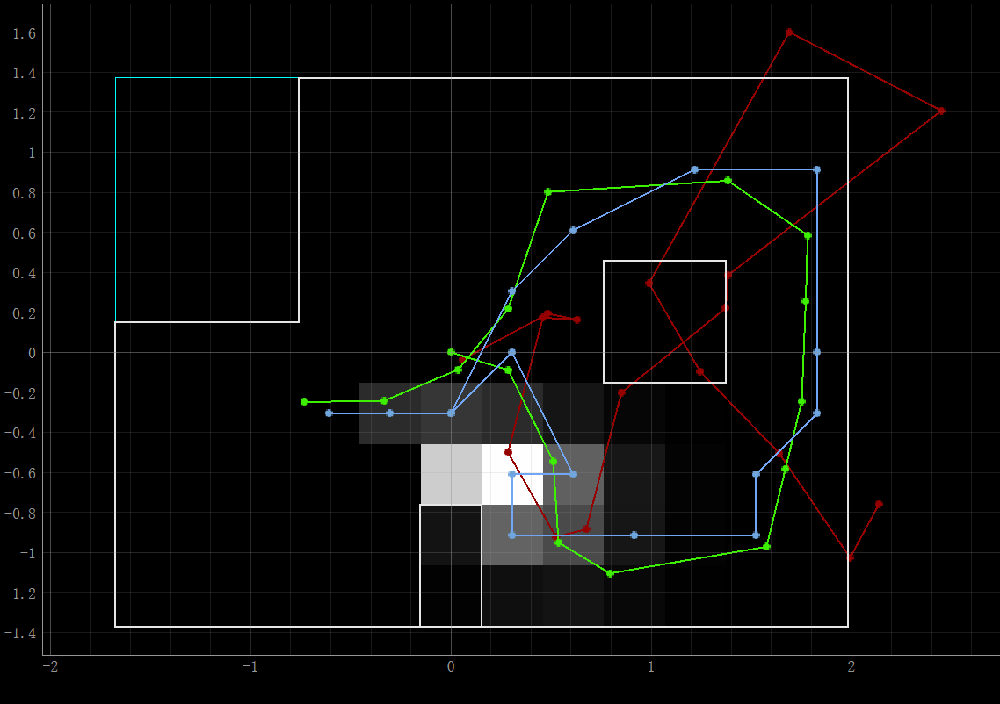
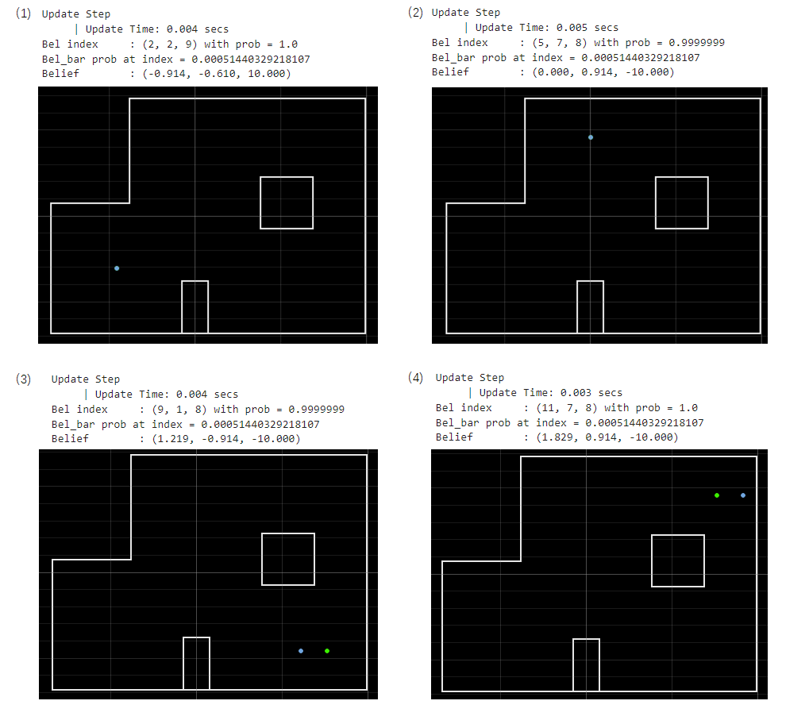

Localization in Simulation
The figure below shows the navigation and localization result in the simulator. Red, green, and blue lines stand for the trajectories of odom, ground truth and Bayes Filter belief respectively. We can tell that the Bayes filter results are close to the ground truth.

Localization in real robot
We were going to localize the robot in different marked poses, and there was no movement between them. Thus, we could use a uniform prior to the pose and just run the update step using the sensor measurement data.
Perform Observation Loop
To get the observation data, the robot needs to turn 360 degrees in place while collecting ToF sensor readings every 20 degrees. We implemented a PID orientation controller created in Lab6 to make the robot rotate precisely. Then, like Lab9, we ran a Bluetooth command 'GET_DISTANCE' after the rotation, which was used to send the average distance from Artemis to the computer. Sensor position, [0.075,0] m, was also considered. Here is the related code.
def perform_observation_loop(self, rot_vel=120):
"""Perform the observation loop behavior on the real robot, where the robot does
a 360 degree turn in place while collecting equidistant (in the angular space) sensor
readings, with the first sensor reading taken at the robot's current heading.
The number of sensor readings depends on "observations_count"(=18) defined in world.yaml.
Keyword arguments:
rot_vel -- (Optional) Angular Velocity for loop (degrees/second)
Do not remove this parameter from the function definition, even if you don't use it.
Returns:
sensor_ranges -- A column numpy array of the range values (meters)
sensor_bearings -- A column numpy array of the bearings at which the sensor readings were taken (degrees)
The bearing values are not used in the Localization module, so you may return a empty numpy array
"""
ble.send_command(CMD.SEND_GOAL, "0")
ble.send_command(CMD.BEGIN, "")
observations_count=robot.config_params["mapper"]["observations_count"] # 18
sensor_ranges=np.zeros([observations_count,1])
sensor_bearings=np.zeros([observations_count,1])
SETPOINT=0
interval=360/observations_count # 20
for i in range(observations_count):
sensor_bearings[i][0]=SETPOINT
ble.send_command(CMD.SEND_GOAL, str(SETPOINT))
await asyncio.sleep(1)
ble.send_command(CMD.GET_DISTANCE, "")
await asyncio.sleep(1)
temp=float(ble.receive_string(ble.uuid['RX_STRING']))*0.001
sensor_ranges[i][0]=temp+0.075
print(SETPOINT,':',temp)
SETPOINT=SETPOINT-interval; # CCW
ble.send_command(CMD.STOP, "")
return sensor_ranges,sensor_bearings*-1
Demo
Results
There are four marked poses:(1) -3 ft, -2 ft , 0 deg; (2) 0 ft, 3 ft, 0 deg; (3) 5 ft, -3 ft, 0 deg; (4) 5 ft, 3 ft, 0 deg. I placed the robot in those marked poses, ran the update step of the Bayes filter, and got the following results. The green dots represent ground truth, while the blue ones are belief.  Table. Localization Results (unit: meter, meter, degree)| # | Truth | Belief | Error |
|---|---|---|---|
| 1 | (-0.914, -0.610, 0) | (-0.914, -0.610, -10) | (0, 0, 10) |
| 2 | (0, 0.914, 0) | (0, 0.914, -10) | (0, 0, 10) |
| 3 | (1.524, -0.914, 0) | (1.219, -0.914, -10) | (0.305, 0, 10) |
| 4 | (1.524, 0.914, 0) | (1.829, 0.914, -10) | (-0.305, 0, 10) |